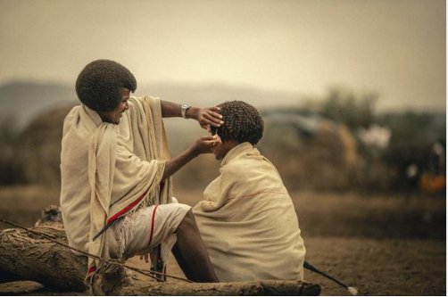
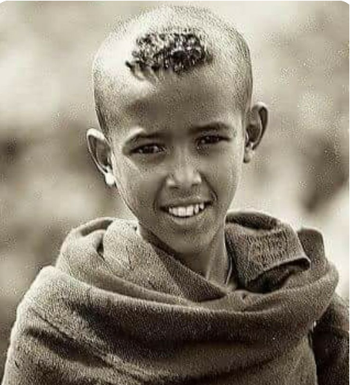

Ethiopian Culture

Afar

AMHARA

Ethiopia is one of the oldest countries in Africa
the emergence of Ethiopian civilization dates back thousands of years
Abyssinia or rather "Ze Etiyopia" was ruled by the Semitic Abyssinians
(Habesha) composed mainly of the Amhara and Tigray, the Cushitic Agaw.
We specialize in tailor making your tour to ensure you get the perfect safari itinerary to your tastes and budget. With a personal touch from the first email
right up until we drop you off at the airport,we pride ourselves on offering unparalleled customer service.
pseveral mountain groups on the central and western plateaus of Ethiopia
in northeastern Africa, probably of early volcanic origin. The most notable
of these is the Simien Mountains, the highest point of which is Ras Dejen (or Dashen)
, 14,872 feet (4,533 metres) high. Other groups are the Choke Mountains, the Lasta
and Amhara-Saint massifs, and the Gemu Massif. No peak in Ethiopia is permanently
snow covered.
Ethiopian Church places a heavier emphasis on Old Testament teachings than one
might find in Eastern Orthodox, Roman Catholic or Protestant churches, and its
followers adhere to certain practices that one finds in Orthodox or Conservative
Judaism
Ethiopia is the source and from where the famed Blue Nile starts its long journey
to Khartoum, and on to the Mediterranean. The 37 islands that are scrattered about
the surface of the Lake shelter fascinating churches and monasteries, some of which
have histories dating back to the 13th Century. However, it should be noted that most of
the religious houses are not open to women. The most interesting islands are: Birgida Mariam
, Dega Estefanous, Dek, Narga, Tana Cherkos9, Mitsele Fasiledes, Kebran and Debre Maryam.
The Rock Hewn Churches of Lalibela were cut out of a living rock during the time of King Lalibela, who ruled Ethiopia from his capital Roha, now Lalibela. The churches are 11 in number, located in three groups. The first groups of Churches are, Bete Medhane Alem, Bete Mariam, Bete Meskel Bete Dengil, BeteGolgota, and Bete Michael. The second groups of churches are Bete Gebriel and Rufael, Bete Amanuel, Bete Markorios, connected by a long underground tunnel, Bete Abba Libanos. The last church is Bete Giorgis, a free standing church with architectural elegance and perfection.
Aksum are found close to Ethiopia's northern border. They mark the location of the heart of ancient Ethiopia, when the Kingdom of Aksum was the most powerful state between the Eastern Roman Empire and Persia. The massive ruins, dating from between the 1st and the 13th century A.D., include monolithic obelisks, giant stelae, royal tombs and the ruins of ancient castles. Long after its political decline in the 10th century, Ethiopian emperors continued to be crowned in Aksum.
is a fortress located in Gondar, Amhara Region, Ethiopia. It was founded in the 17th century by Emperor Fasilides and was the home of Ethiopian emperors. Its unique architecture shows diverse influences including Hindu, Arab, and Baroque characteristics. Because of its historical importance and architecture, the fortress was inscribed as a UNESCO World Heritage Site in 1979. Ghebbi is an Amharic word for a compound or enclosure.The complex of buildings includes Fasilides' castle, Iyasu I's palace, Dawit III's Hall, Empress Mentewab's castle, a chancellery and library from Yohannes I, a banqueting hall from the emperor Bakaffa, stables, and three churches: Asasame Qeddus Mikael, Elfign Giyorgis and Gemjabet Mariyam.
Rich Cultural Heritage: Many tourists appreciate Ethiopia's diverse and ancient cultural heritage, including its historical sites, rock-hewn churches, and UNESCO World Heritage sites such as Lalibela and Axum.
Natural Beauty: Ethiopia is known for its stunning landscapes, including the Simien Mountains, Danakil Depression, Blue Nile Falls, and the Rift Valley. Visitors often express awe at the country's breathtaking scenery and unique wildlife.
At Ethiopian Tourism, we are passionate about showcasing the rich cultural heritage, stunning landscapes, and unique experiences that Ethiopia has to offer. Our mission is to provide you with an unforgettable journey through this beautiful country, immersing you in its vibrant traditions and captivating history.With a team of knowledgeable guides and travel experts, we curate exceptional itineraries that highlight the best of Ethiopia. Whether you're seeking to explore the ancient rock-hewn churches of Lalibela, embark on an adventure through the Simien Mountains, or witness the stunning beauty of the Danakil Depression, we have carefully crafted tours to cater to your interests and preferences.